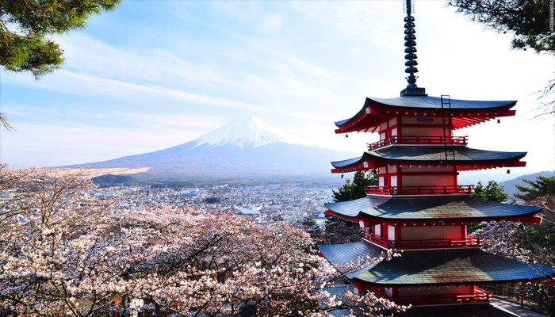

A Warm Welcome To Japan!
Don't Wing It
With a population of 127 million people, Japan has significant transport, hotel and hospitality infrastructure, however this also means things get busy and fill up. The Japanese are great planners and plan ahead when they travel within their own country and you should too. When it comes to rules, the Japanese can be pretty rigid. With such a large population, people need to follow the rules to make the society work. This is one of the reasons Japan is one of the safest countries in the world.
Public Transport
Many Japanese people use their commute as a time to relax or sneak in a quick nap before they clock into the office for the day. So, it goes without saying that commuters on trains and buses in Japan are expected to keep noise to a minimum, which includes talking on the phone. If you have an urge to make a call or talk about to your friend next to you, try and keep your voice down where possible.
Eating On The Go!
With the exception of festivals and sporting matches, eating on the go is not encouraged in Japan and snacking on trains or in crowded spaces is frowned upon. This is mostly to do with the potential for spillage onto another person and the propensity for this to create litter. The general consensus around eating in public is that you should sit down, enjoy and respect your meal without focusing on getting from A to B.
Take Of Your Shoes & Bring a Gift
Japanese people associate the outside world with uncleanliness so don’t be surprised if you get asked to take your shoes off if you enter a friend’s home, a traditional Japanese restaurant or even some hotels. The Japanese love giving and receiving gifts. They don’t need to be fancy or expensive as its mainly the thought that counts.
Japanese Food
Japan is Known for its Sushi and Sashimi all over the world. Ramen is one of the most popular options at the moment when choosing something to eat in Japan. Miso soup is served as a side dish in mostly every meal and with almost every dish.
Attractions
Japan is full of amazing attractions that people from over the world come to see. Some of these places include: Hiroshima Peace Memorial, Jigokudani Monkey Park, Kiyomizu-dera, The Himeji Castle, The Great Buddha of Kamakura, The Todaiji Temple, Tokyo Tower, Tokyo Imperial Palace, Mount Fuji and Kinkaku-ji or the Temple of the Golden Pavilion.

Japanese Culture
In Japanese culture, slurping your noodles is not only customary, it is good manners, a sign that you’re enjoying your food. It’s considered inappropriate to stab or cut food with your chopsticks, or to stick them upright in your food. Putting your chopsticks upright in rice, for example, is associated with funeral traditions.
Cities
There is well over 50 large Cities in Japan. Most cities are home to over 1 million people. Some of these cities include: Tokyo, Yokohama, Osaka, Nagoya, Sapporo, Kobe, Fukuoka, Kawasaki and Saitama. Some of these cities have venues that the Rugby Games will play in.
Some Routes to Help
Japanese Food, Attractions & Transport
Below are pins located on various Food, Tourist Destinations and Transport Options that should make your visit to Japan easy!